using VPLGeometry primitives
List of primitives with example of code for direct construction. See API for turtle constructors (the keyword arguments remain the same).
The 3D visualizations keep the axes to help understand what the standard location and orientation are (use axes = false to turn off). They also set normals = true and wireframe = true to highlight how the mesh is partitioned into triangles and the normal vectors of each triangle (this is important for the ray tracer and when exporting meshes out of VPL). All meshes are rendered in green assuming 50% transparency (color = RGBA(0,1,0,0.5)). Note that one must use transparency = true to ensure that the transparency is enabled when rendering the mesh.
Triangle
p = Triangle(length = 1.0, width = 1.0)
render(p, wireframe = true, normals = true, color = RGBA(0,1,0,0.5), transparency = true)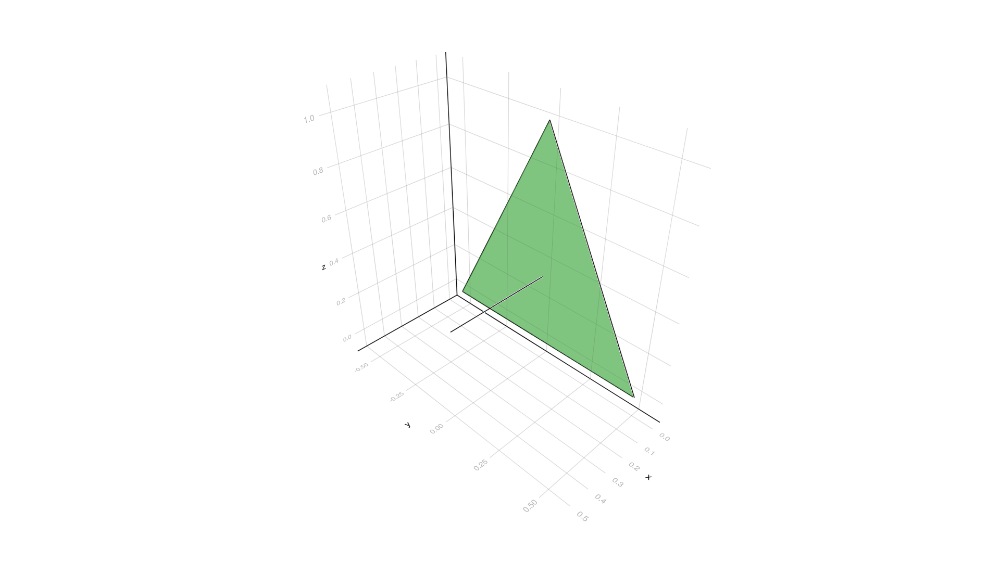
Rectangle
p = Rectangle(length = 1.0, width = 1.0)
render(p, wireframe = true, normals = true, color = RGBA(0,1,0,0.5), transparency = true)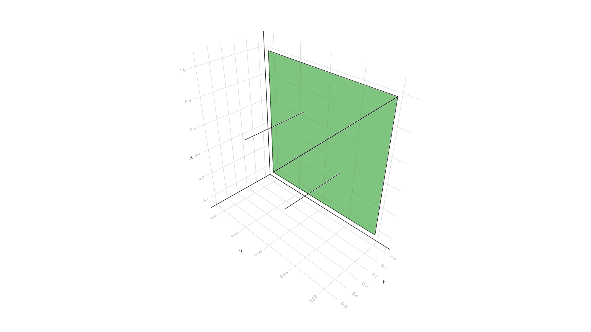
Trapezoid
p = Trapezoid(length = 1.0, width = 1.0, ratio = 0.5)
render(p, wireframe = true, normals = true, color = RGBA(0,1,0,0.5), transparency = true)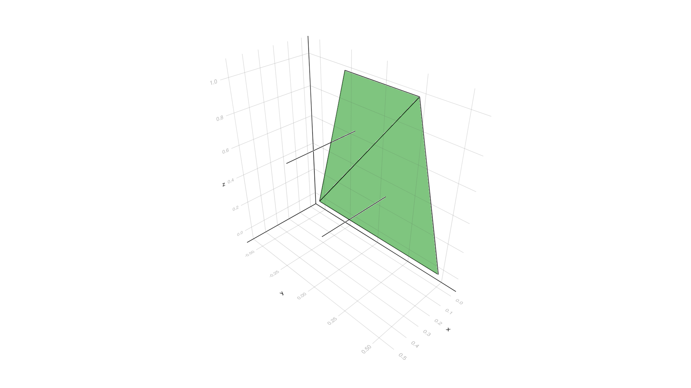
Ellipse
p = Ellipse(length = 1.0, width = 1.0, n = 30)
render(p, wireframe = true, normals = true, color = RGBA(0,1,0,0.5), transparency = true)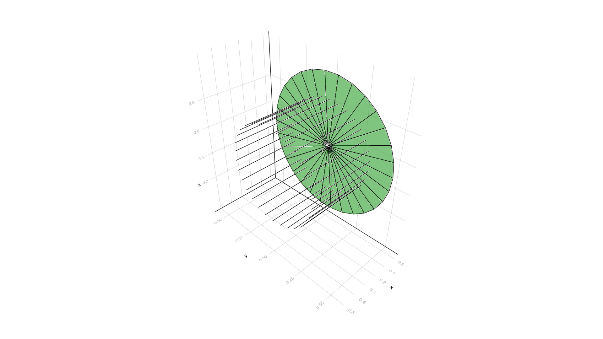
Axis-aligned bounding box
p = BBox(Vec(0.0, 0.0, 0.0), Vec(1.0, 1.0, 1.0))
render(p, wireframe = true, normals = true, color = RGBA(0,1,0,0.5), transparency = true)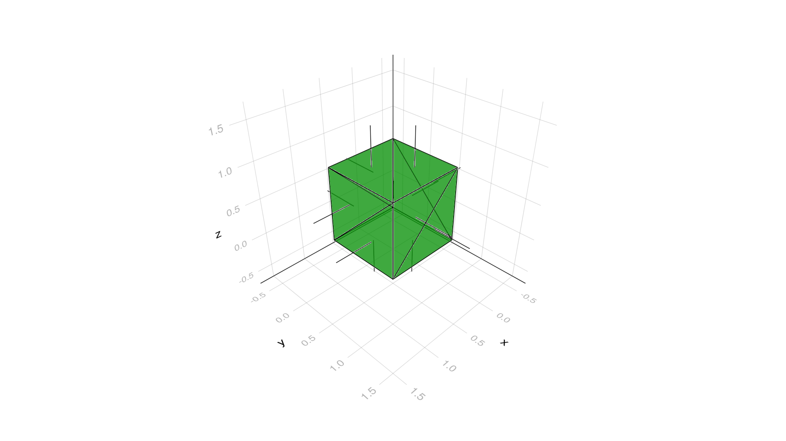
Cube
Solid version
p = SolidCube(length = 1.0, width = 1.0, height = 1.0)
render(p, wireframe = true, normals = true, color = RGBA(0,1,0,0.5), transparency = true)Hollow version
p = HollowCube(length = 1.0, width = 1.0, height = 1.0)
render(p, wireframe = true, normals = true, color = RGBA(0,1,0,0.5), transparency = true)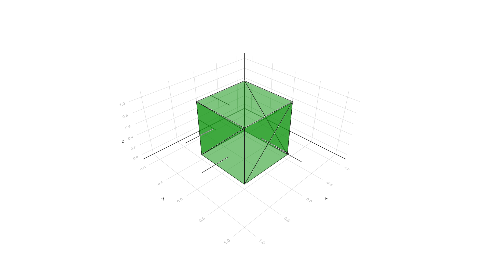
Cylinder
Solid version
p = SolidCylinder(length = 1.0, width = 1.0, height = 1.0, n = 80)
render(p, wireframe = true, normals = true, color = RGBA(0,1,0,0.5), transparency = true)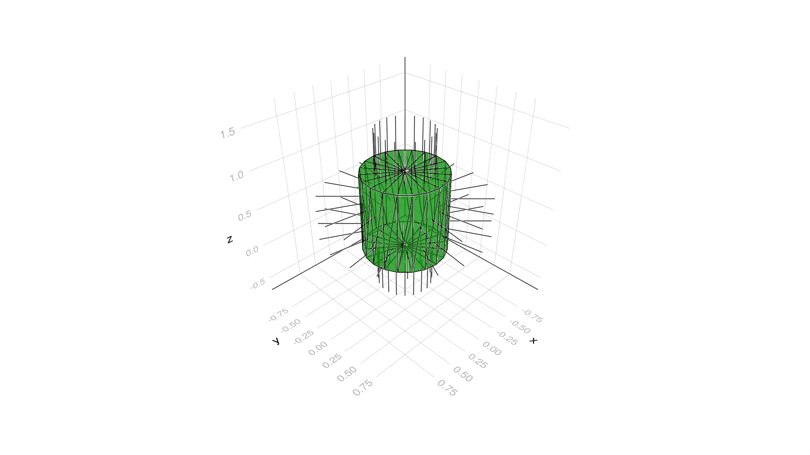
Hollow version
p = HollowCylinder(length = 1.0, width = 1.0, height = 1.0, n = 40)
render(p, wireframe = true, normals = true, color = RGBA(0,1,0,0.5), transparency = true)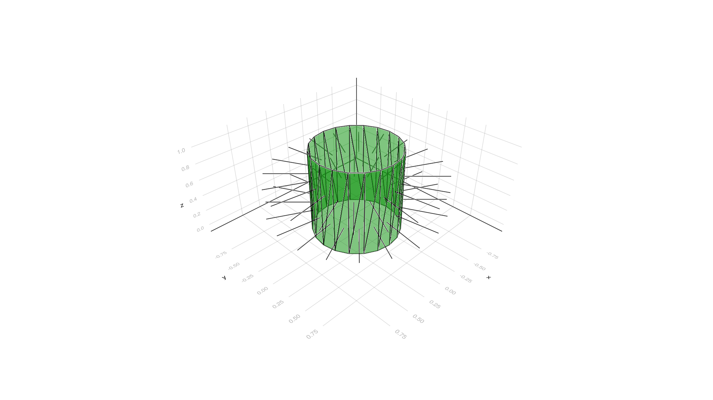
Frustum
Solid version
p = SolidFrustum(length = 1.0, width = 1.0, height = 1.0, ratio = 0.5, n = 80)
render(p, wireframe = true, normals = true, color = RGBA(0,1,0,0.5), transparency = true)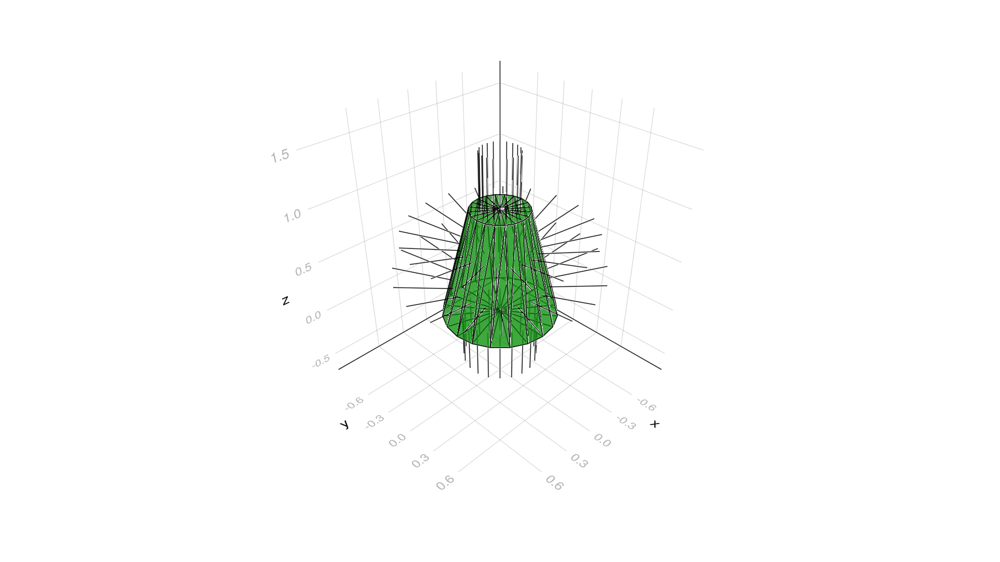
Hollow version
p = HollowFrustum(length = 1.0, width = 1.0, height = 1.0, ratio = 0.5, n = 40)
render(p, wireframe = true, normals = true, color = RGBA(0,1,0,0.5), transparency = true)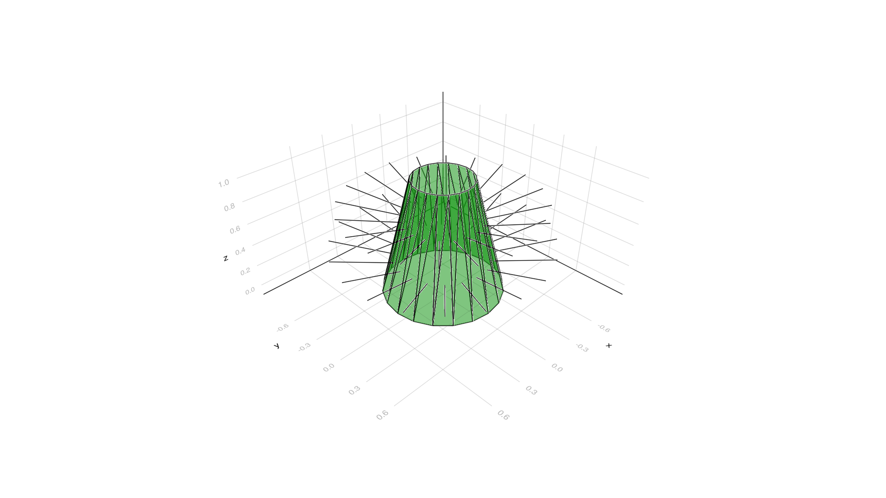
Cone
Solid version
p = SolidCone(length = 1.0, width = 1.0, height = 1.0, n = 40)
render(p, wireframe = true, normals = true, color = RGBA(0,1,0,0.5), transparency = true)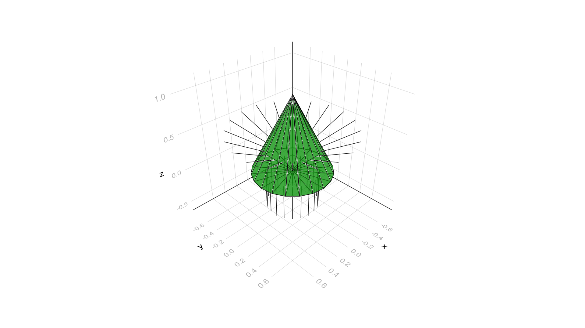
Hollow version
p = HollowCone(length = 1.0, width = 1.0, height = 1.0, n = 20)
render(p, wireframe = true, normals = true, color = RGBA(0,1,0,0.5), transparency = true)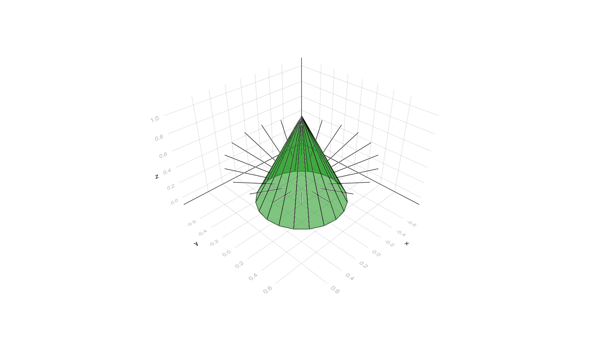